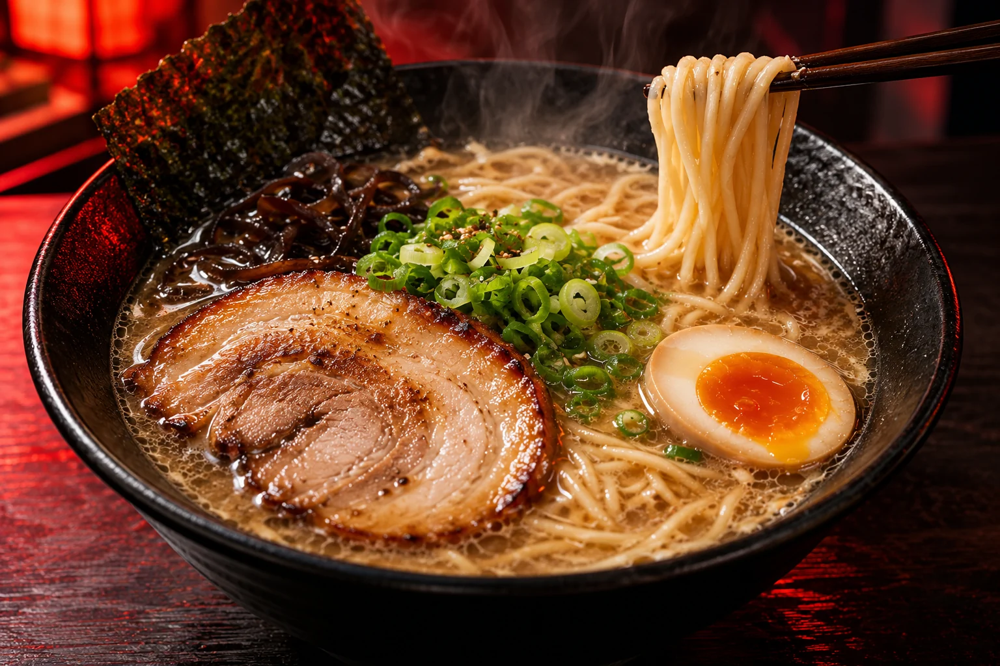
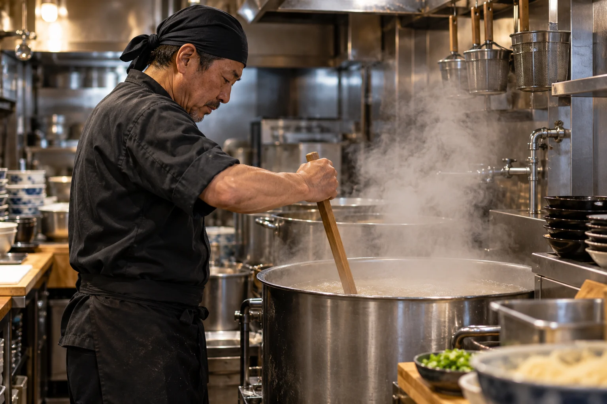
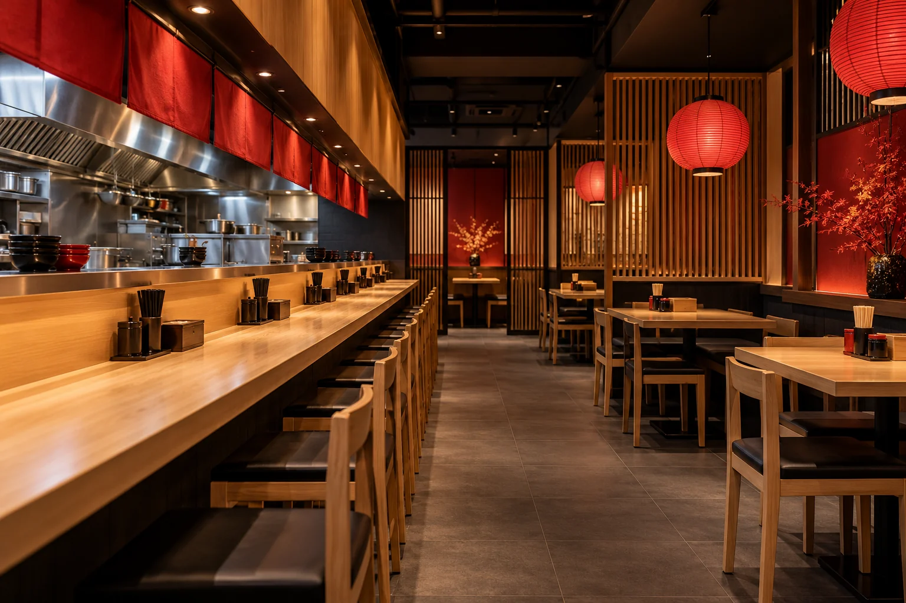

麺を、すすれ。
自家製麺と豚骨醤油の組み合わせ。ひと口の香りと食感を大切に、一杯ずつ仕上げる店を目指します。

小倉の1号店から、八幡西へ。お昼の一人ごはんも、家族で過ごす休日も。豚骨醤油の香りと自家製麺で迎える、2号店の準備を進めています。開店日が決まったら、オープン案内でお知らせします。
自家製麺と豚骨醤油の組み合わせ。ひと口の香りと食感を大切に、一杯ずつ仕上げる店を目指します。
2号店は32席の計画。カウンターでさっと一杯、家族のテーブルでゆっくり一杯。その日の気分でどうぞ。
駐車場15台の予定。満車時は近隣や路上に停めず、正式オープン案内の駐車・待機方法をご確認ください。
2号店の計画：32席 ／ 駐車場15台。写真はすべて生成イメージで、完成店舗・実商品の写真ではありません。

TAKEZO / SECOND SHOP
OPENING PLAN
3 DAYS
替え玉無料を計画中。ひと口目から、最後の一本まで。
CONDITIONS / ご利用の条件
オープン記念は開店から3日間、替え玉無料を計画しています。開店日・対象メニュー・利用回数・LINE提示要否・提供数は調整中です。現在使えるクーポンではありません。正式な実施期間と条件が決まってからご案内します。ラーメンの販売価格・営業時間・定休日も確定後に掲載します。

NEXT STEP
本番ではLINE友だち登録へつなぐ予定です。ここではデモフォームを体験できます。
確定した日付、営業時間、替え玉特典の条件、アクセスをチェック。
当日の営業・駐車案内を確かめてご来店ください。席予約を受け付けるフォームではありません。
QUESTIONS
開店日はまだ未確定です。工事・営業準備を確認してから正式にご案内します。カウントダウンで未確定日を演出していません。
北九州市八幡西区の設定です。住所・地図は未確定のため、実在する別店舗の地図は載せていません。
開店から3日間を計画する設定です。対象商品・利用回数などは調整中で、本ページは有効なクーポンではありません。
家族連れの利用を想定した32席の計画です。子ども用椅子やベビーカー対応などの設備は完成後に確認して案内します。
原材料と調理環境の確認が必要です。安全を保証する表示はしていません。正式な連絡先が決まってから事前にお問い合わせください。
時給1,100円〜・まかない無料という企画設定ですが、現在の最低賃金との適合や勤務条件は未確認です。正式な募集要項を整えるまで求人応募は受け付けません。
TAKE THE NEXT STEP
オープン案内・特典を受け取る
このフォームは入力・確認画面のデモです。情報は送信・保存されません。実際の申込・予約・購入は成立しません。実在する個人情報の入力は不要です。